点検表 選択・印刷
VER2.0.0共有フォルダにある Excel の点検表を、画面で探して選び、部数を決めて印刷します。印刷の前に、中身をプレビューで確かめられます。
1. このツールでできること
- 点検表フォルダの中の Excel の点検表が、カテゴリー(例: 梱包・押出・品質)とサブカテゴリー(例: 日常点検・月次点検)に分かれて一覧で出ます。
- 点検表を押して選びます。いくつでも選べます。選んだ順番に印刷されます。
- 印刷部数(1〜100 部)を決めて、まとめて印刷します。印刷の前にプレビューで中身を見られます。
- 印刷は Windows のふだん使うプリンター(既定のプリンター)に出ます。用紙・余白・印刷範囲は、点検表の Excel に決めてあるとおりです。
開きかた: 統合ツールの上の大きなタブの点検表を押します。
2. 画面の見かた
左が点検表の一覧、右が選んだ点検表と印刷のボタンです。上の帯に、いまの様子とボタンがあります。
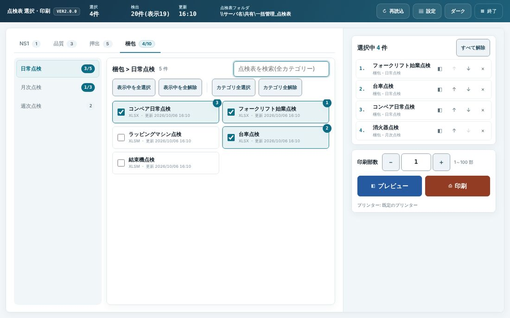
1 2 3 4 5 6 7 8 9 10 11 12 13- いまの様子 … 選択(選んだ件数)・検出(見つかった点検表の数)・更新(一覧を読んだ時刻)・点検表フォルダ(読んでいる場所)。
- 再読込 … 点検表フォルダを読み直します。点検表を足した・消したときに押します。
- 設定 … 点検表フォルダなどの設定です(5. 設定)。ふだんは触りません。
- ダーク/ライト … 画面の明るさを切り替えます。ボタンには切り替え先が出ます(明るい画面のときは「ダーク」)。
- 終了 … 統合ツールを終わります(7. 終わるとき)。
- カテゴリーのタブ … 押すとそのカテゴリーに切り替わります。数字はそのカテゴリーの点検表の数。選んでいると「選んだ数/全部の数」になります。
- サブカテゴリー … 押すと、その中の点検表が右に並びます。
- 検索の欄 … 名前の一部を入れると、全部のカテゴリーから探します。
- まとめて選ぶボタン … 表示中を全選択表示中を全解除カテゴリ全選択カテゴリ全解除。
- 点検表の一覧 … 押すとチェックが付き、右上に選んだ順の番号が出ます。もう一度押すと外れます。
- 選択中 … 選んだ点検表が印刷する順番に並びます。順番の入れ替えもここでします。
- 印刷部数 … 1 つの点検表を何部印刷するか(1〜100 部)。
- プレビューと印刷 … その下に、印刷先のプリンターの名前が出ます。
3. 毎日の操作
流れは「探す → 選ぶ → 部数 → プレビュー → 印刷」です。
3-1. カテゴリーから点検表を探す
統合ツールの大きなタブの点検表を押します。
はじめは「点検表フォルダを確認しています」と出ることがあります。少し待つと一覧が出ます。
上のカテゴリーのタブ(①)を押します。次に左のサブカテゴリー(②)を押します。
右に、その中の点検表が並びます。見出し(③)に「カテゴリー > サブカテゴリー」と件数が出ます。
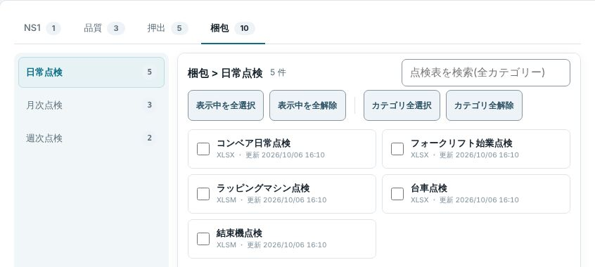
1 2 3「梱包」のタブ → 「日常点検」を押したところ
3-2. 点検表を選ぶ(選んだ順に印刷されます)
印刷したい点検表を、印刷したい順に押します。
押した点検表にはチェックが付き、右上に番号(1・2・3…)が出ます(①)。右の選択中(②)にも同じ順で並びます。
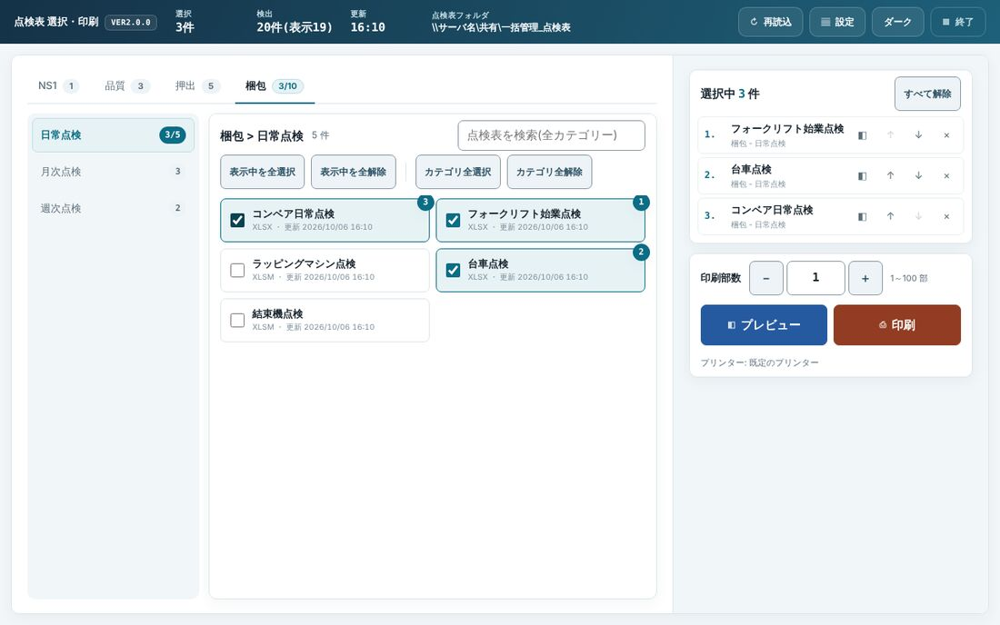
1 2 3 4フォークリフト始業点検 → 台車点検 → コンベア日常点検 の順に押したところ - 選んだ点検表。右上の番号が印刷する順番です。
- 選択中の一覧。上から順に印刷します。
- 上の帯の「選択」にも件数が出ます。
- タブとサブカテゴリーの数が「3/10」「3/5」のように変わります(10 件のうち 3 件を選んでいる)。
こつまちがえて押したときは、もう一度押すと外れます。ほかのカテゴリーの点検表も、続けて選べます。タブを切り替えても、選んだものは残ります。
3-3. 名前で探す(検索)
右上の検索の欄(①)に、点検表の名前の一部を入れます(例: 「消火器」)。
全部のカテゴリーから探して、見つかったものが出ます。上に「カテゴリー > サブカテゴリー」(②)が出るので、どこにあるかも分かります。
出てきた点検表(③)を押して選びます。番号は続きの番号(この例では 4)になります。
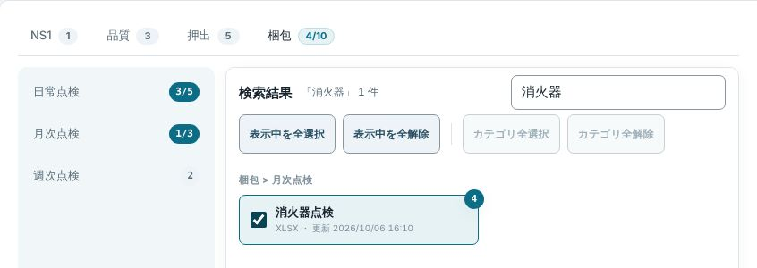
1 2 3「消火器」で探して、消火器点検を選んだところ 探し終わったら、検索の欄の文字を消します(Esc キーでも消えます)。もとの一覧にもどります。
3-4. 印刷の順番を直す・選択を外す
右の選択中で、1 件ずつ操作できます。
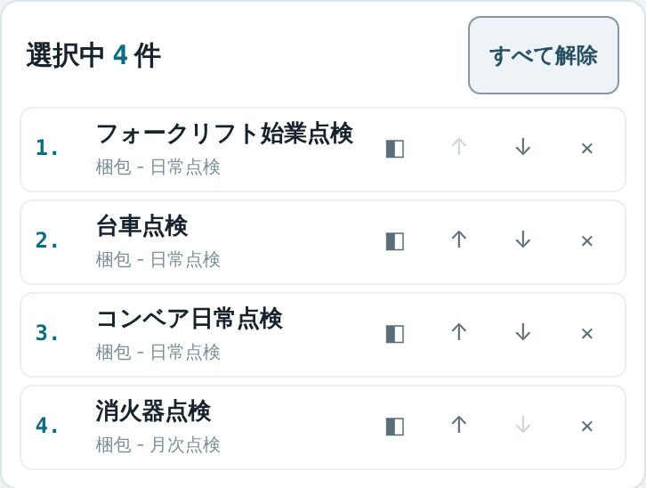
1 2- すべて解除 … 選んだものを全部外します。
- 各行の右の小さなボタン:
| ボタン | すること |
|---|---|
| ◧ | その点検表のプレビューを開く |
| ↑ | 印刷の順番を 1 つ上げる |
| ↓ | 印刷の順番を 1 つ下げる |
| × | その点検表の選択を外す |
いちばん上の行の ↑ と、いちばん下の行の ↓ は押せません(薄く出ます)。
3-5. 部数を決める
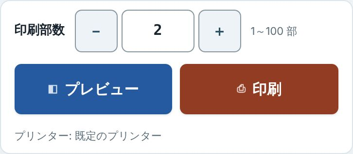
1 2 3 4- 印刷部数 … ＋−で 1 ずつ変わります。欄に数字を直接入れてもかまいません(1〜100)。選んだ点検表のどれも、この部数ずつ印刷します。
- プレビュー … 印刷の前に中身を見ます(次の 3-6)。
- 印刷 … 印刷を始めます(3-7)。
- プリンター … 印刷先です。Windows の既定のプリンターに出ます。
3-6. プレビューで確かめる
プレビューを押します。選んだ点検表の 1 件目が出ます。
はじめて見る点検表は、Excel で絵を作るので数秒〜十数秒かかります。2 回目からはすぐに出ます。
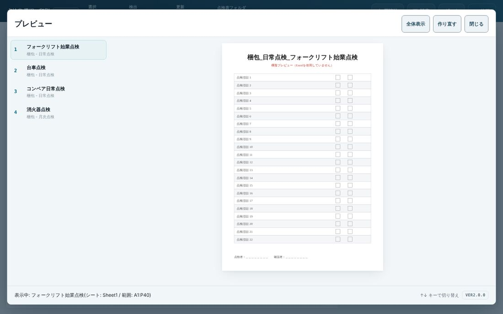
1 2 3 4 5 6 7プレビュー(写真は練習用の見本の絵です。本当の画面では点検表の Excel の中身が出ます) - 選んだ点検表の一覧。押すと、その点検表に切り替わります。
- 点検表の絵。押すと「全体表示」と「実寸表示(大きく)」が切り替わります。
- 全体表示 … 押すと実寸表示になり、細かいところを大きく見られます。もう一度押すと戻ります。
- 作り直す … Excel から絵を作り直します。点検表の Excel を直したのに古い絵が出るときに押します。
- 閉じる … プレビューを閉じて、もとの画面に戻ります。
- いま出している点検表の名前と、シート名・範囲。
- ↑↓ キーでも、前・次の点検表に切り替えられます。
こつプレビューは中身を確かめるためのものです。紙の大きさ・余白は、Excel の点検表に決めてあるとおりに印刷されます。確かめたら閉じるを押します。
3-7. 印刷する
印刷を押します。「印刷の確認」が出ます。
件数と部数を確かめて、印刷するを押します。やめるときはキャンセル。
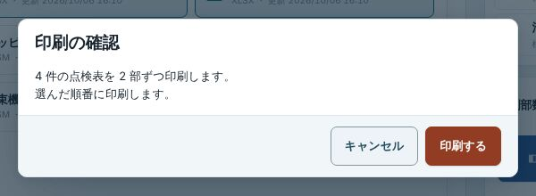
印刷の確認 気をつけることふだんの会社のパソコンでは、この確認にプリンターの名前も出ます。ちがうプリンターになっていたらキャンセルして、班長に知らせてください。「印刷中...」の画面が出て、選んだ順に 1 件ずつ印刷します。
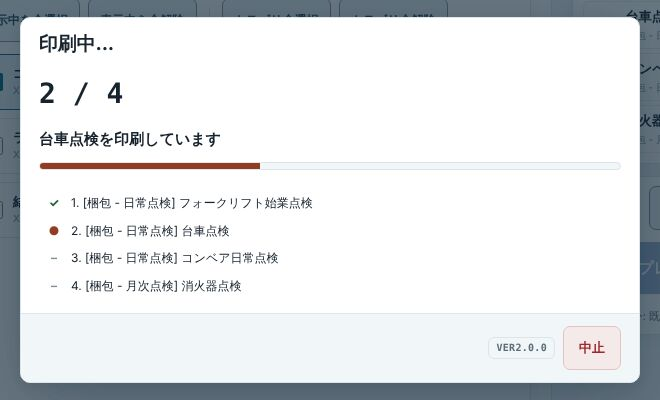
1 2 3印刷中 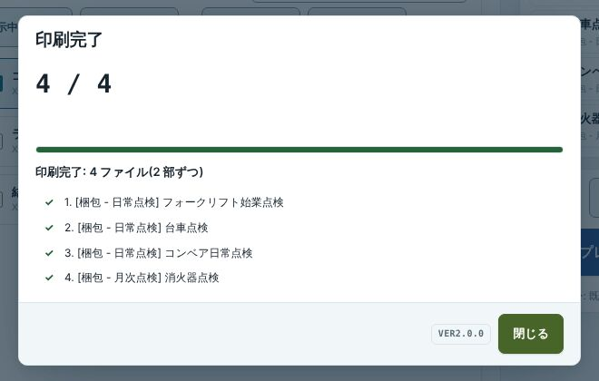
印刷完了 - 何件目を印刷しているか(全部で何件か)。
- 1 件ずつの様子。✓ 印刷できた/● 印刷している/– まだ/✕ 印刷できなかった。
- 中止 … 印刷を途中でやめます。いま印刷している 1 件が終わってから止まります。
印刷中は、点検表を選び直したり、再読込・設定を押したりはできません。
「印刷完了」と出たら、プリンターから紙が出ているか確かめて、閉じるを押します。
「印刷完了(エラーあり)」と出たときは、6. 困ったときを見てください。
4. そのほかの操作
まとめて選ぶ・外す
| ボタン | すること |
|---|---|
| 表示中を全選択 | いま一覧に出ている点検表(開いているサブカテゴリー、または検索で出たもの)を全部選ぶ。上から順に番号が付きます。 |
| 表示中を全解除 | いま一覧に出ている点検表の選択を全部外す。 |
| カテゴリ全選択 | いまのカテゴリー(タブ)の中の点検表を、サブカテゴリーもふくめて全部選ぶ。 |
| カテゴリ全解除 | いまのカテゴリーの中の選択を全部外す。 |
| すべて解除(右の選択中) | 選んだものを全部外す。 |
検索しているあいだは、カテゴリ全選択とカテゴリ全解除は押せません。
一覧を読み直す
点検表フォルダに点検表を足した・消した・名前を変えたときは、上の帯の再読込を押します。「一覧を読み直しました」と出て、一覧が新しくなります。
一覧から無くなった点検表を選んでいたときは、その選択は外れます(知らせが出ます)。
画面の明るさを変える
上の帯のダーク(暗くする)/ライト(明るくする)を押します。選んだ明るさは、このパソコンで次に開いたときも同じです。
5. 設定(班長・管理者)
上の帯の設定を押すと開きます。ライン作業者はふだん触りません。中は 4 つの面に分かれています。終わったら右下の閉じるを押します。
| 面 | だれが・いつ | 中身 |
|---|---|---|
| 点検表フォルダ | 班長・管理者。点検表の置き場所が変わったとき | 点検表が入っている親フォルダを決める。パスワードは要りません |
| 管理者パスワード | 管理者 | 配布設定を操作するときのパスワードを変える |
| 配布設定 | 管理者。全ラインの設定をそろえるとき | このパソコンの設定を書き出し、ほかのラインのパソコンが次に開いたときに読み込む。管理者パスワードが要ります |
| ログ | 管理者。エラーの原因を調べるとき | 問い合わせ番号で、そのときの記録を出す。ログの保存先を決める |
点検表フォルダ
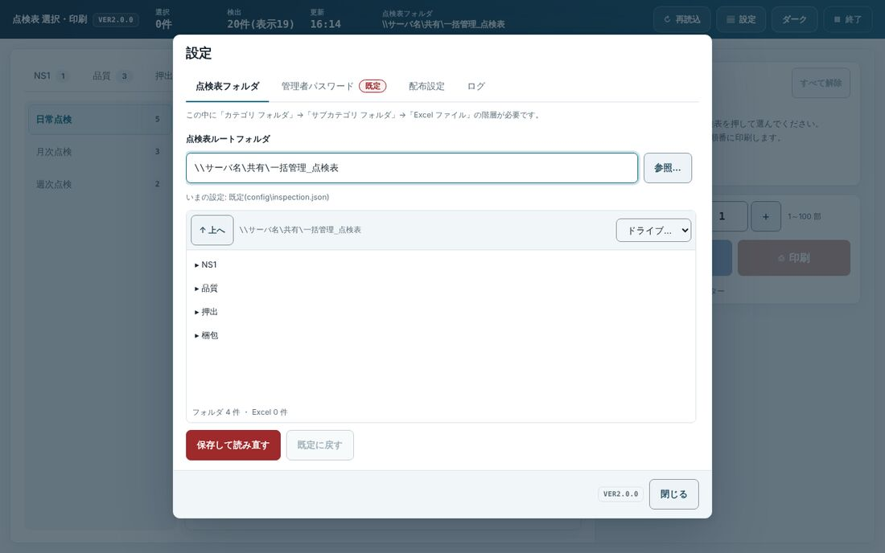
1 2 3 4 5- 点検表ルートフォルダ … 点検表の親フォルダの場所。直接入れてもかまいません。
- 参照… … Windows の「フォルダーの選択」の窓で選べます。
- フォルダの一覧 … 押すとそのフォルダに入り、上の欄もその場所になります。↑ 上へで 1 つ上へ、「ドライブ…」でドライブを選べます。
- 保存して読み直す … 決めたフォルダを保存し、一覧を読み直します。
- 既定に戻す … このパソコンで決めたフォルダをやめて、最初から決まっている場所に戻します(変えていないときは押せません)。
梱包_日常点検_台車点検.xlsx)にします。この形でないファイルは一覧に出ません。使える Excel は .xlsx・.xlsm・.xls です。管理者パスワード・配布設定
配布設定は、1 台で決めた設定(点検表フォルダ・ログの保存先など)を、全ラインのパソコンにそろえるためのものです。
1 台で「点検表フォルダ」などを決めます。
配布設定の面で、入れる項目にチェックを付け、管理者パスワードを入れて配布設定を書き出すを押します。
ほかのラインのパソコンは、次に開いたときに読み込みます。ただし、そのパソコンで自分で決めてある項目は上書きしません。そろえたいパソコンでは配布設定を読み込み直すを押します(管理者パスワードが要ります)。
やめるときは配布設定を消す。パスワードは管理者パスワードの面で、いまのパスワードと新しいパスワードを入れてパスワードを変えるを押すと変わります(4 文字以上)。
ログ(問い合わせ番号で調べる)
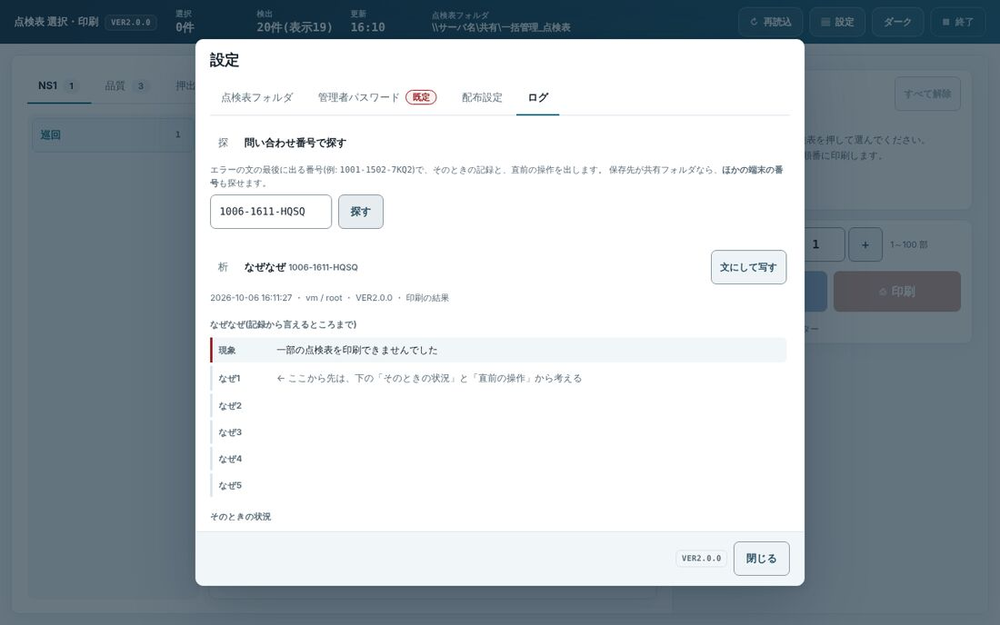
1 2 3 4 5- ログの面を押します。
- 作業者から聞いた問い合わせ番号(例:
1006-1611-HQSQ)を入れます。 - 探すを押します。
- なぜなぜ … 画面に出た文(現象)と、記録から分かったこと。下に「そのときの状況」「同じ番号の記録」「直前に起きていたこと」が続きます。
- 文にして写す … メールや Teams にはれる文にして写します。
下にスクロールすると、「最近のエラー・断り(この端末・7日)」の一覧と、ログの保存先(共有フォルダにすると全ラインのログが 1 か所に集まります)があります。
6. 困ったとき
| こうなった | こうする |
|---|---|
| 「印刷完了(エラーあり)」と出た | ✕ の付いた点検表は印刷されていません。問い合わせ番号を控えて(写真でもよい)、班長・管理者に伝えます。ほかの点検表は印刷できています(下の写真)。 |
| プレビューに「表示できません」と出た | 赤い文の下のもう一度を押します。直らないときは、問い合わせ番号を控えて班長に伝えます。 |
| 「Excelが応答しませんでした」と出た | パスワード付きの点検表や、開くと確認が出る点検表かもしれません。班長に伝えて、点検表の Excel を見てもらいます。 |
| 「ほかの画面で印刷中です」と出た | 先に始めた印刷が終わるまで待ちます。印刷は同時に 1 つだけです。 |
| 「一覧に見つからない点検表が ○ 件あります」と出た | 再読込を押してから、選び直します。 |
| 「印刷部数は1～100の数値で入力してください。」と出た | 印刷部数の欄に 1〜100 の数字を入れます。 |
| あるはずの点検表が一覧に出ない | まず再読込を押します。それでも出ないときは、一覧のいちばん下の「命名規則に合わないため表示していないファイル」を押して見ます(下の写真)。ファイル名の形がちがうので、班長に直してもらいます(5. 設定の「気をつけること」)。 |
| 「点検表フォルダが見つかりません」と出た | 共有フォルダにつながっていないかもしれません。少し待って再読込。直らないときは班長に伝えます(設定 → 点検表フォルダ)。 |
| 上に赤い帯「バックエンドに接続できません」が出た | 帯の再接続を押します。直らないときは、統合ツールを右上の終了で閉じて、開き直します。 |
| 上に「新しい版が置かれました」の帯が出た | 印刷が終わったところで、統合ツールを右上の終了で閉じて、開き直します。閉じなくても、いまの版のまま使えます。 |
| まちがえて印刷を始めた | 「印刷中...」の画面の中止を押します。いま印刷している 1 件が終わると止まります。 |
| 画面が暗い | 上の帯のライトを押します。 |
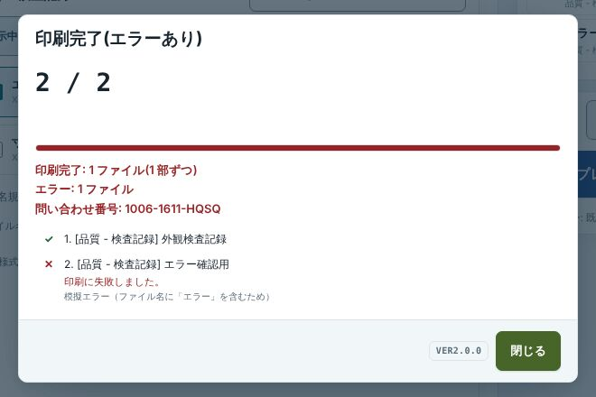
1 2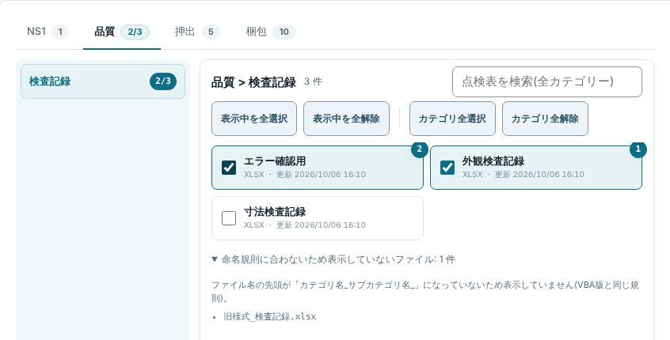
11006-1611-HQSQ)。管理者は 設定 → ログ で、この番号から原因を調べられます(5. 設定)。7. 終わるとき
印刷が終わっているか確かめます(「印刷中...」の画面が出ていないこと)。
統合ツールの右上の終了を押します。点検表の画面の上の帯の終了を押しても同じで、統合ツール全体が閉じます。
点検表の画面の終了からは「統合ツールを終了しますか?(ほかのツールのタブもまとめて閉じます)」と出ます。終了するを押します。やめるときはキャンセル。
この説明書は「点検表 選択・印刷」VER2.0.0 に合わせて作りました。統合ツールの右上の「説明書」ボタン(または F1)から開けます。画面写真は練習用の見本の点検表で撮ったもので、点検表の名前・フォルダの場所・問い合わせ番号は例です。